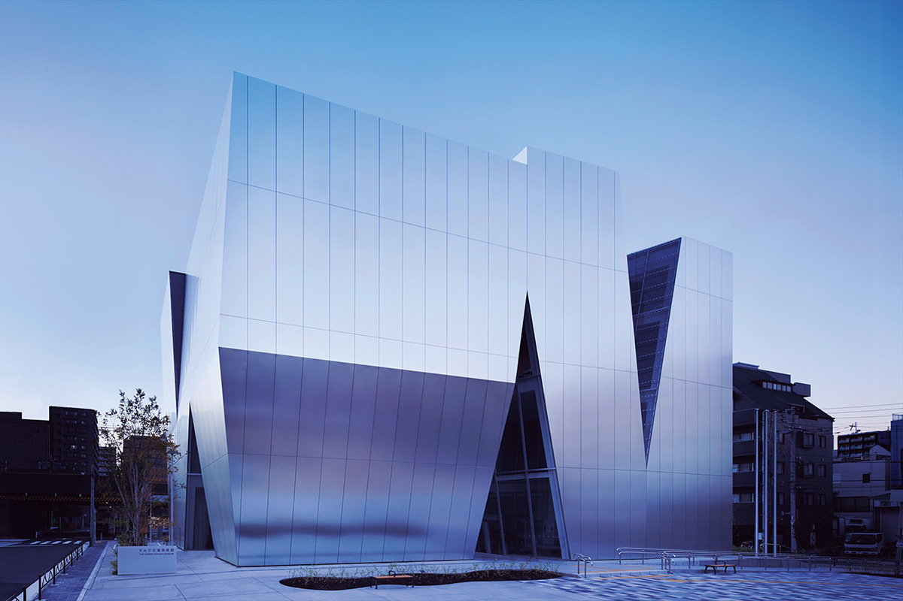
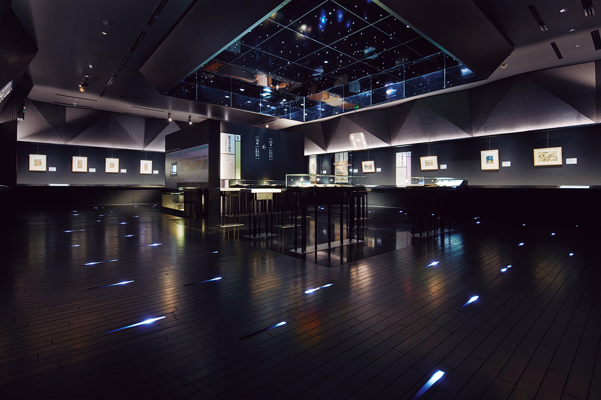
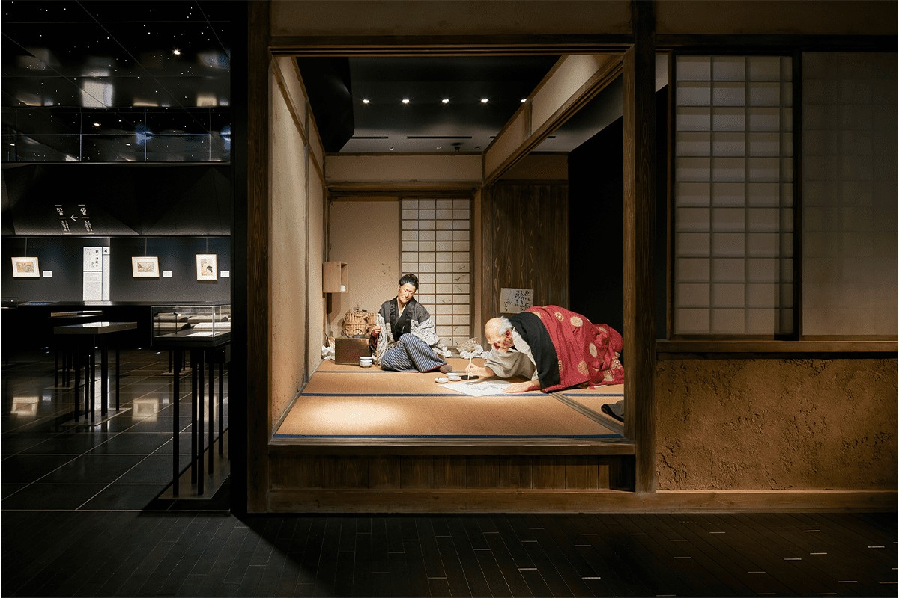
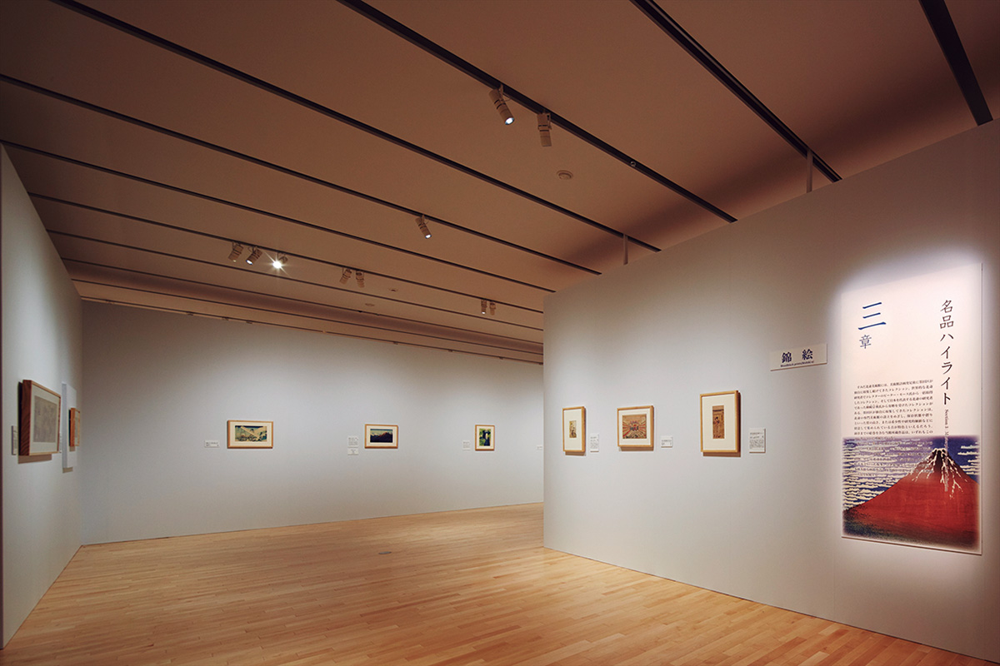
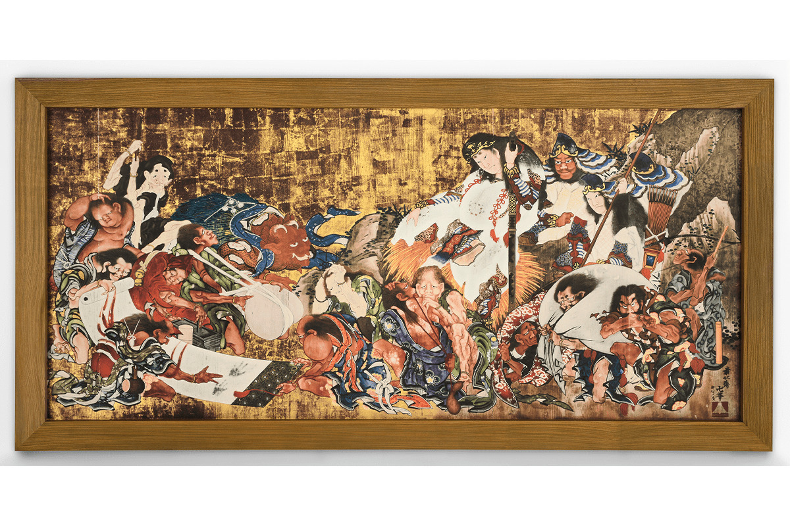
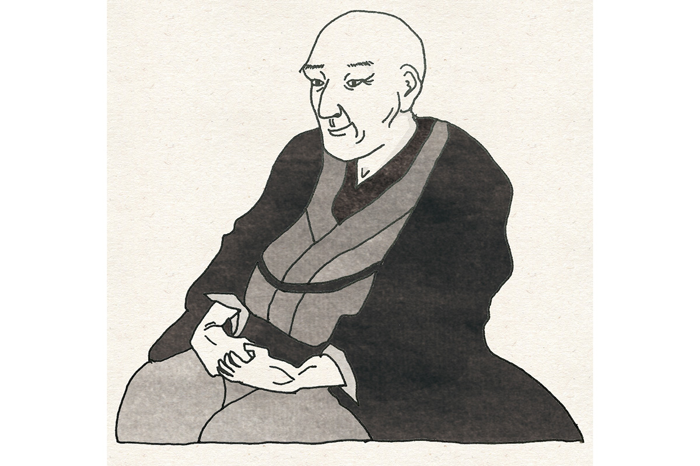

Токио · Сумида · музей
Музей Хокусая в Сумиде: художник у себя дома, в зеркальном здании Кадзуё Сэдзимы

Кацусика Хокусай родился в районе Сумида на востоке Токио и провёл здесь почти всю свою долгую жизнь. В 2016 году район открыл ему музей, и отсюда удобно начать прогулку по местам, связанным с художником.
Музей
Хокусай на родной земле
Кацусика Хокусай (1760–1849) это один из самых известных в мире художников укиё-э, японской гравюры и живописи эпохи Эдо. Он прожил около девяноста лет и почти все их провёл в Сумиде, районе на востоке Токио. В ноябре 2016 года здесь открылся музей Хокусая в Сумиде.
В собрании около 1 800 работ. Кроме того, что собрал сам район, сюда вошли коллекция одного из крупнейших в мире собирателей Хокусая и коллекция ведущего японского исследователя укиё-э. Работы показывают по очереди, под темы временных выставок.

Постоянная экспозиция называется AURORA. Она начинается с того, что связывает Хокусая с Сумидой, а дальше идёт по шести периодам, которые разделены по его художественным именам. Пройдя её, хорошо понимаешь, как менялся художник. Временные выставки готовят кураторы, которые занимаются именно Хокусаем, и некоторые выставки посвящены его ученикам. Вместе с постоянной экспозицией они показывают, насколько разным и глубоким бывает Хокусай.


Здание
Зеркальная алюминиевая оболочка
Здание спроектировала архитектор Кадзуё Сэдзима. Стены облицованы алюминиевыми панелями с зеркальной поверхностью, и музей выглядит по-разному в зависимости от погоды и времени суток. Объём рассечён узкими прорезями, поэтому войти можно с любой из четырёх сторон. Архитектуру стоит рассмотреть так же внимательно, как и гравюры.
На сайте музея есть карта мест Сумиды, связанных с Хокусаем. Рекомендуем после музея пройтись по окрестностям: Сумида среди 23 районов Токио особенно хорошо сохранила ремесленную традицию, и с Хокусаем этот район открывается с новой стороны.
Экспонат
Божество Сусаноо и пятнадцать духов болезней

Главный экспонат, который можно увидеть только здесь, связан с Сумидой напрямую. Это большое эма, вотивная картина на доске, которую Хокусай написал от руки в 86 лет по японскому счёту и поднёс святилищу Усидзима в Сумиде. По словам сотрудников музея, это одна из крупнейших и лучших работ его поздних лет. Перед божеством Сусаноо стоят на коленях пятнадцать разных духов болезней, и с них берут расписку, что больше они вредить не будут.
Подлинник сгорел во время Великого землетрясения Канто 1923 года. К открытию музея в 2016 году картину воссоздали в натуральную величину в виде предполагаемой реконструкции.
Характер
Неутомимый экспериментатор

Сотрудники музея описывают Хокусая одним словом: неутомимый экспериментатор. О нём ходят невероятные истории: он больше тридцати раз менял имя и 93 раза переезжал.
«Это доказательство того, что он не останавливался на достигнутом, а стремился стать настоящим художником и всё время пробовал новые приёмы. В пейзажах, в изображениях цветов и птиц и в других жанрах гравюры укиё-э он был первопроходцем»
куратор музея
Музей Хокусая в Сумиде
- Адрес
- Токио, Сумида, Камэдзава, 2-7-2
- Телефон
- +81 3-6658-8936
- Часы работы
- 9:30–17:30 (вход до 17:00)
- Выходные
- понедельник (если праздник, то следующий рабочий день), новогодние дни
- Цены / Вход
- постоянная экспозиция AURORA 400 иен, группа 320 иен; старшеклассники, студенты и посетители от 65 лет 300 иен, группа 240 иен; школьники средней школы и младше бесплатно. Временные выставки по отдельной цене.
- Как добраться
- 5 минут пешком от выхода A3 станции Рёгоку линии метро Тоэй Оэдо, 9 минут от восточного выхода станции Рёгоку линии JR Собу. Парковки нет.
Фото: Forward Stroke.